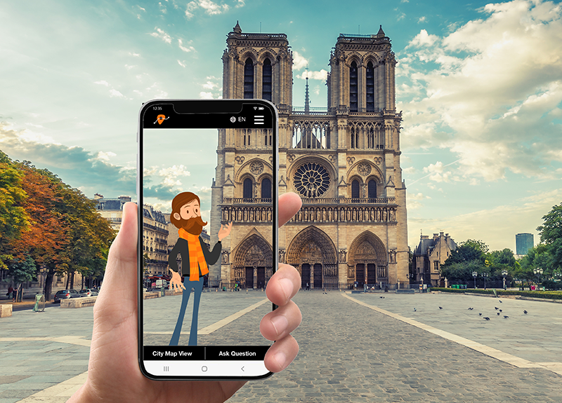
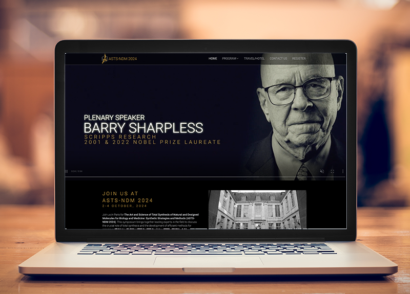
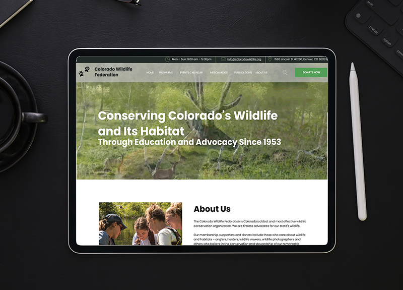

My Work

WanderingGuide App
With built in navigation and an augmented tour guide, the Wandering Guide app allows travelers to explorer a city on their own time with ease.
ASTS-NDM 2024
The Art and Science of Total Synthesis of Natural and Designed Molecules for Biology and Medicine: Synthetic Strategies and Methods (ASTS-NDM 2024). This symposium brings together leading experts in the field to discuss the crucial role of total synthesis and the development of efficient methods for organic synthesis in advancing biology and medicine.


Colorado Wildlife Federation
The Colorado Wildlife Federation preserves and protects our state's natural habitats and wildlife. As a group project, we redesigned their website to better serve their mission and our community.